Components
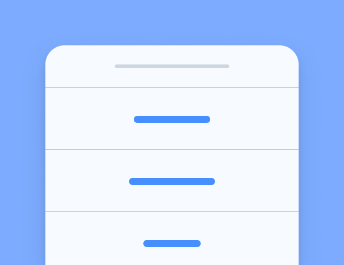
Action Sheet
Action Sheets display a set of options with the ability to confirm or cancel an action.
Alert
Alerts are a great way to offer the user the ability to choose a specific action or list of
actions.
Badge
Badges are a small component that typically communicate a numerical value to the user.
Button
Buttons let your users take action. They're an essential way to interact with and navigate
through an app.
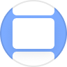
Card
Cards are a great way to display an important piece of content, and can contain images,
buttons, text, and more.
Checkbox
Checkboxes can be used to let the user know they need to make a binary decision.
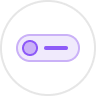
Chip
Chips are a compact way to display data or actions.
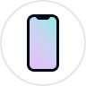
Content
Content is the quintessential way to interact with and navigate through an app.
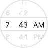
Date & Time Pickers
Date & time pickers are used to present an interface that makes it easy for users to select
dates and times.
Floating Action Button
Floating action buttons are circular buttons that perform a primary action on a screen.
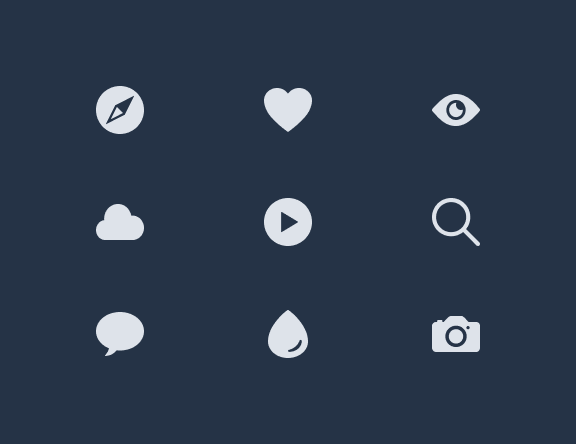
Icons
Beautifully designed icons for use in web, iOS, Android, and desktop apps.
Grid
The grid is a powerful mobile-first system for building custom layouts.
Infinite Scroll
Infinite scroll allows you to load new data as the user scrolls through your app.
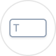
Input
Inputs provides a way for users to enter data in your app.
Item
Items are an all-purpose UI container that can be used as part of a list.
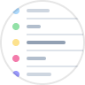
List
Lists can display rows of information, such as a contact list, playlist, or menu.
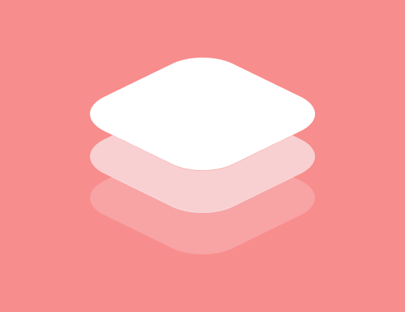
Navigation
Navigation is how users move between different pages in your app.
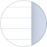
Menu
Menus are a common navigation pattern. They can be permanently on-screen, or revealed when
needed.
Modal
Modals slide in and off screen to display a temporary UI and are often used for login or
sign-up pages.
Popover
Popover provides an easy way to present information or options without changing contexts.
Progress Indicators
Progress indicators visualize the progression of an operation or activity.
Radio
Radio inputs allow you to present a set of exclusive options.
Refresher
Refresher provides pull-to-refresh functionality on a content component.
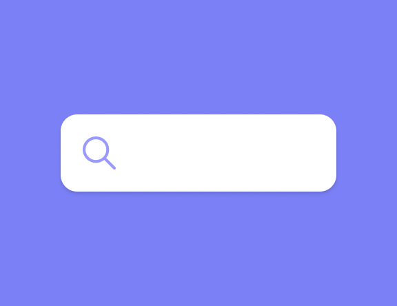
Searchbar
Searchbar is used to search or filter items, usually from a toolbar.
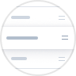
Reorder
Reorder lets users drag and drop to reorder a list of items.
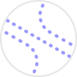
Routing
Routing allows navigation based on the current path.
Segment
Segments provide a set of exclusive buttons that can be used as a filter or view switcher.
Select
Select is similar to the native HTML select, with a few improvements to sorting and selecting.
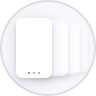
Slides
Slides make it easy to create complex UI such as galleries, tutorials, and page-based layouts.
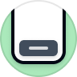
Toast
Toast is used to show a notification over the top of an app's content. It can be temporary or
dismissable.
Toolbar
Toolbars are used to house information and actions relating to your app.